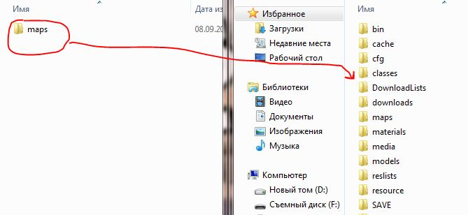

Skins:
1. Разархивируем файл.
2. Открываем полученную папку и открываем папку с самой игрой.
3. В папке с игрой открываем папку cstrike.
4. В папке со скином выделяем все папки последнего уровня(models, materials и т.д) и перемещаем выделенное в папку cstrike игры.
5. Подтверждаем замену всех папок(не забываем для удобства ставить галочку).
6. После замены папок нужно подтвердить замену всех файлов (так же не забываем для удобства поставить галочку). Готово.
Maps:
При скачивании карт все действия те же самые, но вместо models, materials, scripts и sound папка будет одна, которая называется maps. Замены файлов кстати тоже не будет.
